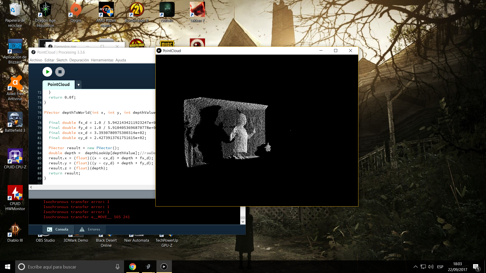

Themes
Black (default) -
White -
League -
Sky -
Beige -
Simple
Serif -
Blood -
Night -
Moon -
Solarized
KINECT AND PROCESSING
POINT CLOUD
Created by Daniel Chala / David Herrera
INDEX
KINECT
KINECT

OVERVIEW
The Microsoft Kinect sensor is a peripheral device that functions much like a webcam. However, in addition to providing an RGB image, it also provides a depth map. Meaning for every pixel seen by the sensor, the Kinect measures distance from the sensor.
HOW DOES KINECT WORKS?
The Kinect sensor itself only measures color and depth.
SKELETON TRACKING
Windows: Thomas Lengling’s windows-only Kinect v2 processing libray.
HARDWARE
Standalone Kinect Sensor v1.
PROCESSING
PROCESSING

OVERVIEW
Processing is an open source programming language and environment for people who want to create images, animations, and interactions.
START WITH KINECT IN PROCESSING
The easiest way to install the library is with the Processing Contributions Manager Sketch → Import Libraries → Add library and search for “Kinect”. A button will appear labeled “install”.
Then, restart Processing.
POINT CLOUD
Overview
We’re using the 3D capabilities of Processing to draw points in space.
Raw depth values
Rather than do this calculation all the time, we can precompute all of these values in a lookup table since there are only 2048 depth values.
Raw depth values
The raw depth values from the kinect are not directly proportional to physical depth. Rather, they scale with the inverse of the depth according to this formula:
Raw depth values
Thanks to Matthew Fisher for the above formula.
Note: For the results to be more accurate, you would need to calibrate your specific kinect device.
Point cloud
Finally, we can draw some points based on the depth values in meters:
Obtained result
Related video
The following video is a great resource for this implementation: